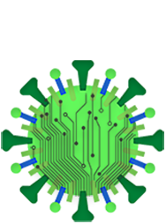

As semelhanças entre a Covid-19 e os vírus de computador.

TechnoCovid
AS SEMELHANÇAS ENTRE A COVID-19 E OS VÍRUS DE COMPUTADOR
AS DIVERSAS SIMILARIDADES ENTRE UM SOFTWARE E UM VÍRUS REAL
Data de publicação: 06/10/2020
A nova Doença do Coronavírus descoberta em 2019, Corona Virus
Disease em inglês ou simplesmente Covid-19, é provocada pelo novo
coranavírus: o Sars-Cov-2, que inicialmente fora denominado 2019-nCov.
O termo Sars-Cov-2 é uma abreviatura para “Severe Acute Respiratory
Syndrome Coronavirus 2” (Síndrome Respiratória Aguda Grave do
Coranavírus 2). A epidemia da SARS em 2002 foi provocada por outro
coronavírus, o Sars-Cov-1.
O vírus biológico sobre o qual hoje estamos tratando é bem
semelhante ao digital. Vamos para a seguinte analogia de como ele
funciona.
Um vírus biológico, tal como o Sars-Cov-2, precisa de outros tipos de
organismos para se multiplicar. Assim como o vírus da Covid-19 parasita
as células do corpo humano, o vírus digital se adentra no sistema do
computador e seus devidos arquivos, e se multiplica através dos mesmos,
se virmos que o sistema do computador e seus arquivos forem a mesma
coisa do nosso organismo humano e seus sistemas, veremos que os dois
funcionam da mesma forma. Seu principal objetivo é fazer com que
ocorra uma decadência em seu hospedeiro, seja ele humano ou máquina,
porque, como vimos na analogia feita acima, eles funcionam da mesma
forma.
A diferença entre eles é que o vírus informático (digital) é feito pelos
próprios humanos com o fim de destruir e/ou roubar informações do
computador que infectou. Os vírus biológicos, como os da Covid-19, foram
feitos pela a própria mãe natureza com o fim de se reproduzir no
hospedeiro infectado, podendo ou não o levar à morte.
Como se iniciam as infecções e como isso afeta a
população?
Ainda existe uma grande parte da população que não entende as
prevenções e como se iniciam as infecções.
A infecção da Covid-19 é iniciada por gotículas contaminadas que
podem ser adquiridas simplesmente respirando o ar ou ao ter contato
físico com secreções nasais e salivares de um infectado. Por isso é
recomendado sempre usar máscaras. Elas bloqueiam a entrada do vírus
pela boca e nariz, os lugares mais recomendados que não se toque
porque são grandes meios de entradas para o Sars-Cov-2.
Segundo Beatriz Rabelo, também biomédica e professora do Centro
Universitário UniFTC de Vitória da Conquista, quando o Vírus da Covid19
tem acesso às entradas boca e nariz, o corpo começa a manifestar as
primeiras inflamações, como dor de garganta e nariz entupido, seguindo
pelas vias aéreas tendo como destino os pulmões e até lá outros sintomas
podem se manifestar: febre, perda de apetite, mal estar, tosse e o
recentemente descoberto perda do paladar e olfato, acarretando numa
pneumonia. Como plano, o Sars-Cov-2 vai congestionar pequenos sacos
de ar chamados de alvéolos, localizados na extremidade dos nossos
pulmões, responsáveis por fazer o oxigênio chegar até o sangue e o resto
do corpo e é aí onde mora o perigo, o corpo recebe menos oxigênio e
pode levar o paciente a ter uma insuficiência respiratória.
Quais são as semelhanças entre o antivírus e a
vacina?
Antivírus são programas criados com intuito de garantir a segurança
do computador, protegendo-os de códigos maliciosos, chamados
popularmente de vírus (o nosso vírus digital que já falamos no início),
estes têm o objetivo estragar, deletar, alterar ou roubar dados do
computador, com os mais diversos fins, como já vimos. Ou seja, os
antivírus trabalham na proteção virtual da máquina, monitorando todos
os arquivos executados no computador e fazendo uma comparação dos
códigos presentes nos arquivos com aqueles salvos no programa como
códigos maliciosos. Caso haja partes parecidas entre eles, o antivírus julga
aquele arquivo contaminado e tenta devolver seu formato original.
As vacinas, assim como os antivírus, têm a função de proteger um
sistema contra a ação de um tipo de vírus, porém no caso das vacinas, o
sistema pertence a um organismo vivo e não a uma máquina, para isto é
introduzido no organismo uma forma enfraquecida do agente que causa
doença, ou, no caso das vacinas inativadas, mortos ou apenas partes do
causador das determinadas enfermidades da qual se deseja fazer a
imunização. Após isso, as defesas do organismo entram em ação e geram
anticorpos e células de memória imunológica. Desse modo, assim como
no antivírus no processo de comparação de códigos para posterior
eliminação, se no futuro o agente ativo da doença atacar o organismo, os
anticorpos específicos gerados pela vacina vão eliminá-lo.
Ambos os imunizadores precisam estar sempre atualizados para
garantir uma proteção segura dos sistemas desejados, seja mantendo o
calendário de vacinação em dia e tomando todas as vacinas necessárias
ou baixando atualizações do antivírus.
TEMPOS DIFÍCEIS, EXIGEM AMOR AO EXTREMO! CUIDEM-SE!